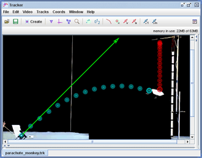

How should you aim a launcher to hit a monkey falling with a parachute? Students answered this question by first building dynamic models of both the monkey (coffee filter) and projectile and adjusting the launch angle of the model projectile to score a hit. When they aimed the real projectile to match the model, they hit the real monkey on the first try!
